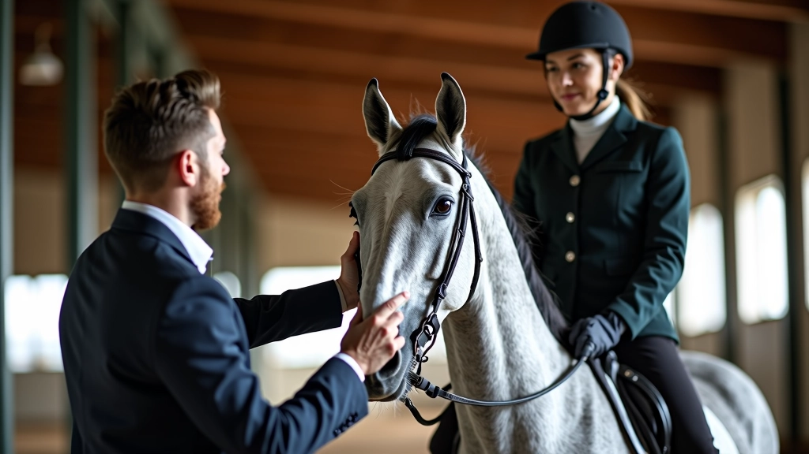
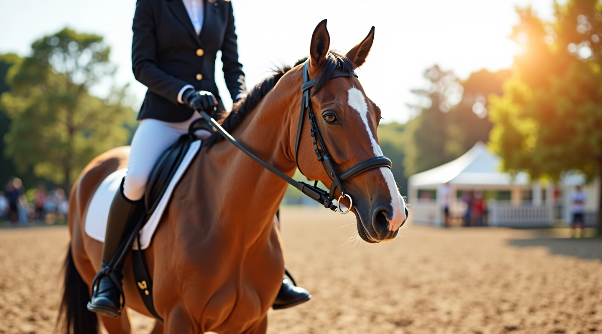
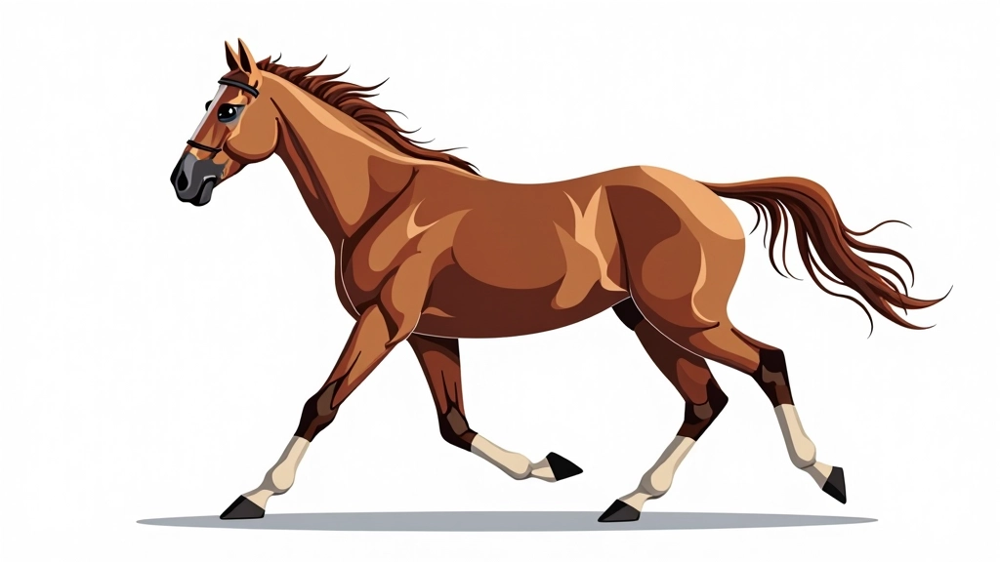
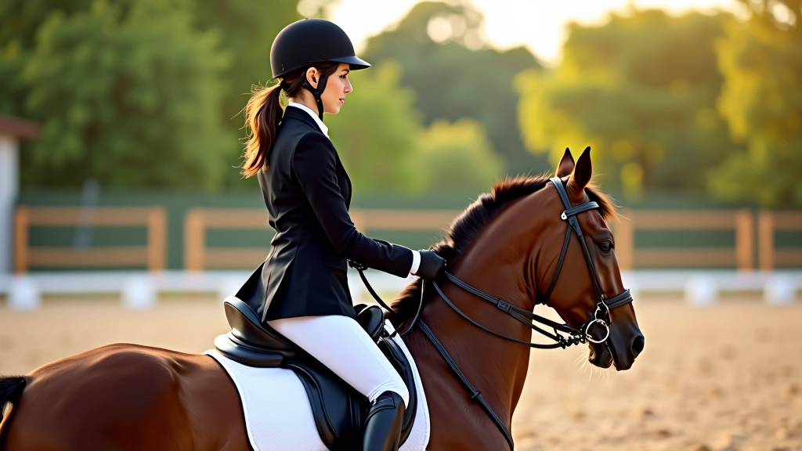
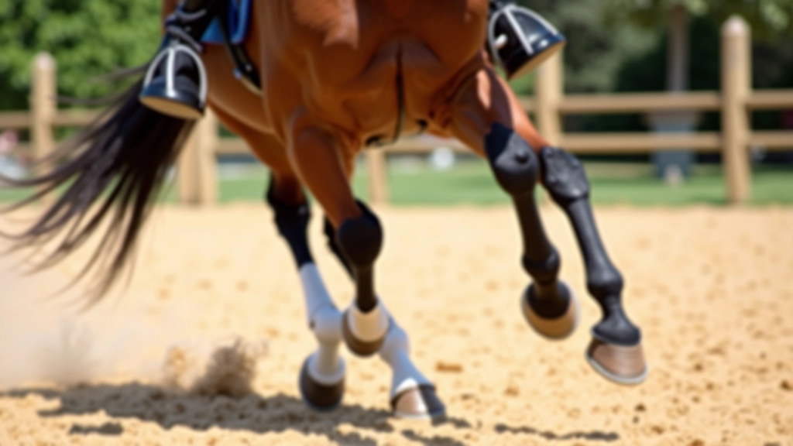
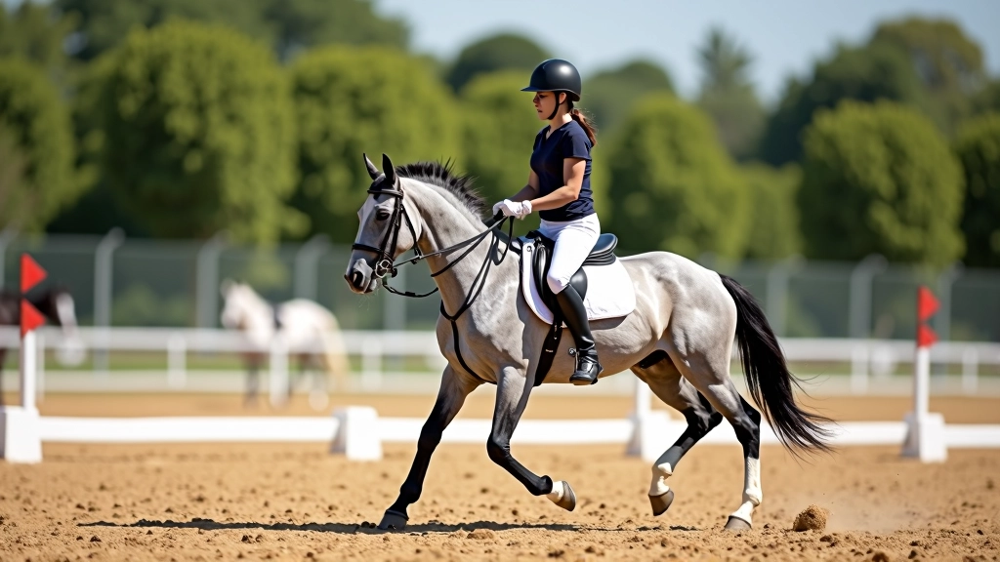
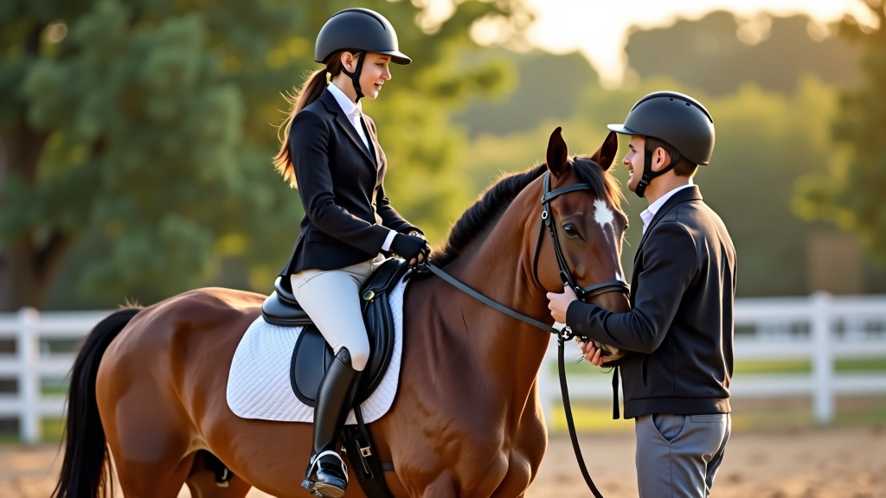
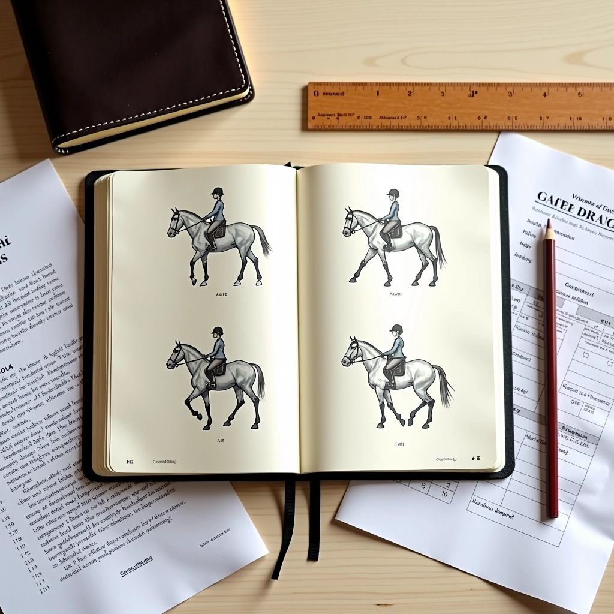

تقنيات التدريب المتقدمة
تطوير مهارات متقدمة وتحسين الأداء
شرح تفصيلي لكيفية تعليم الحصان تغيير قدمه بشكل صحيح. يتضمن التحضير الأساسي والخطوات الأولى للمبتدئين.

تغيير القدم في العدو هو حركة أساسية في ركوب الخيل، حيث يقوم الفارس بتغيير الرجل الأمامية التي يقودها الحصان أثناء الحركة. عندما يعدو الحصان، تكون هناك رجل أمامية تتقدم عن الأخرى — هذا ما يسمى "القدم الرائدة".
الشيء الأساسي الذي تحتاج إلى معرفته هو أن هذه الحركة لا تحدث بسحب الخيط فقط. إنها مسألة توازن وإيقاع وفهم الحصان. معظم الخيول المبتدئة تحتاج إلى بعض الوقت والصبر قبل أن تفهم ما تطلبه.

قبل محاولة تعليم الحصان تغيير القدم، تحتاج إلى التأكد من أن أساسيات العدو قد أتقنت بالفعل. الخيل الذي لا يعرف كيفية الحفاظ على عدو سلس ومستقيم لن يستطيع تغيير قدميه بفعالية.
تأكد من أن الحصان يستطيع الحفاظ على عدو متوازن لمدة دقائق متتالية. الحصان يجب أن يكون مريحاً ومستجيباً للإشارات الخفيفة من يديك وساقيك.
اقضِ وقتاً في فهم طريقة استجابة الحصان لحركاتك. كل حصان مختلف — بعضها حساس جداً والبعض الآخر يحتاج إلى إشارات أقوى قليلاً.
يجب أن تكون جالساً بثبات في السرج، مع توزيع متساوٍ للوزن على كلا الجانبين. التوازن السيء سيجعل من الصعب جداً على الحصان فهم ما تطلبه.

العملية تتطلب صبراً وممارسة منتظمة. لا تتوقع أن يحدث هذا في جلسة واحدة أو حتى أسبوع واحد. معظم الخيول تحتاج إلى 3 أو 4 أسابيع من التدريب المنتظم قبل أن تبدأ في فهم الطلب بشكل واضح.
تغيير القدم يبدأ بإشارة خفيفة من ساقك الخارجية — هذه هي الرسالة الأساسية للحصان. عندما تضغط بساقك الخارجية قليلاً للخلف، تخبر الحصان أنك تريد منه تغيير القدم الرائدة.
لكن هناك أكثر من مجرد الضغط بالساق. توازنك وموضع جسمك مهم جداً. الفارس الجيد يشعر بإيقاع الحصان ويطلب التغيير في اللحظة المناسبة من الخطوة — عادة ما تكون في لحظة التعليق، عندما تكون جميع أرجل الحصان في الهواء لجزء من الثانية.

إليك خطة تدريب أسبوعية بسيطة تعمل مع معظم الخيول. الفكرة هي البناء التدريجي، مع تكرار الإشارات بشكل متسق حتى يبدأ الحصان في التعرف عليها.
التركيز على عدو سلس ومتسق. لا تحاول تغيير القدم بعد. فقط دع الحصان يعتاد على التحكم الأساسي والاستجابة للإشارات. 20-30 دقيقة عدو يومياً كافية.
ابدأ في تقديم إشارة التغيير. عندما تشعر أن الحصان في عدو جيد، أضف ضغط الساق الخارجي برفق. لا تتوقع نتيجة فوراً — فقط كرر الإشارة بثبات.
زيادة التكرار والتركيز. الحصان يجب أن يبدأ في إظهار استجابة واضحة. قد تحصل على تغيير قدم كامل، أو قد تحصل على تغيير جزئي — كلاهما تقدم.
تثبيت السلوك. بحلول هذا الوقت، يجب أن يتمكن الحصان من تغيير القدم بشكل متسق استجابة لإشارتك. تابع التدريب مع فترات راحة منتظمة.

بعض الفرسان يعتقدون أنهم يحتاجون إلى ركل الحصان بقوة لجعله يتغير. هذا خطأ. الحصان الحساس يستجيب لإشارات خفيفة. الضغط الزائد يرتبك الحصان فقط.
عندما تسحب الخيط بينما تضغط بالساق، تعطي الحصان رسائل متضاربة. أبقِ يديك هادئة وثابتة، واترك الساق تفعل العمل.
إذا حاولت تعليم تغيير القدم قبل إتقان الحصان للعدو الأساسي، ستضيع وقتك. التأسيس القوي ضروري قبل الانتقال إلى الحركات الأكثر تعقيداً.
الاتساق هو المفتاح. إذا كنت تطلب التغيير بطرق مختلفة في أيام مختلفة، فإن الحصان لن يعرف بالضبط ما تتوقعه. استخدم نفس الإشارة في كل مرة.

نتائج التدريب تختلف من حصان إلى آخر. بعض الخيول تتعلم بسرعة، والبعض الآخر يحتاج إلى وقت أطول. هذا الدليل يقدم إرشادات عملية عامة، لكن كل حصان له احتياجاته الخاصة. إذا واجهت صعوبات، فمن الأفضل العمل مع مدرب متخصص في ركوب الخيل.
تغيير القدم في العدو ليس حركة معقدة كما قد تبدو. إنها ببساطة مسألة اتصال واضح بين الفارس والحصان. مع الصبر والممارسة المنتظمة والتركيز على التأسيس الصحيح، ستجد أن معظم الخيول تتعلم هذه المهارة.
تذكر: لا تتسرع. الخيول تتعلم بشكل أفضل عندما يشعرون بالأمان والفهم. ركز على بناء ثقة قوية مع حصانك، وكل شيء آخر سيأتي بشكل طبيعي.

فريق التحرير والمحتوى
كتبه فريق تحرير أكاديمية الأهرام للفروسية، متخصص في تقديم إرشادات عملية وموثوقة حول تدريب الخيل.

تطوير مهارات متقدمة وتحسين الأداء

تعرف على الأخطاء وكيفية تصحيحها

خطة تدريب منظمة لمدة شهرين